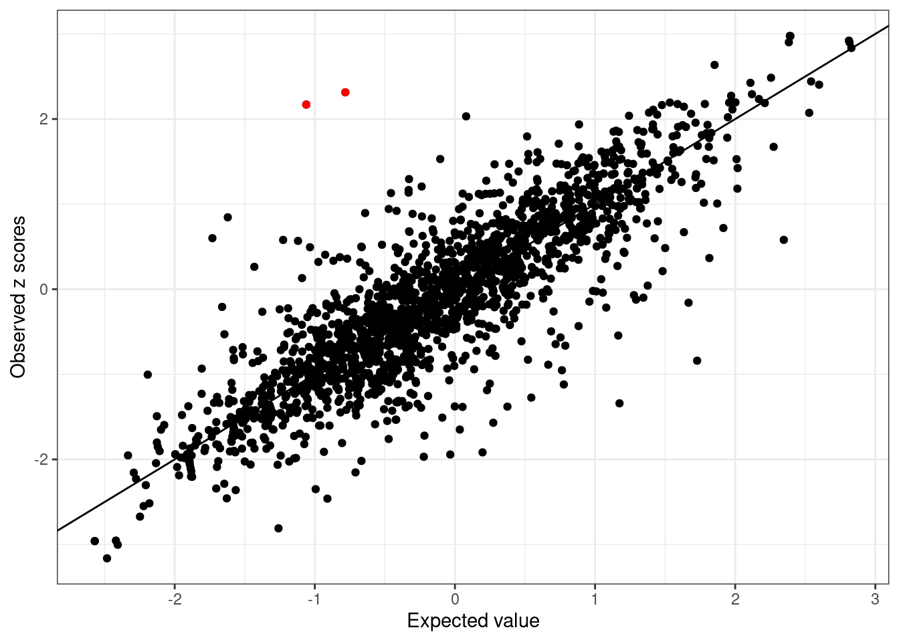
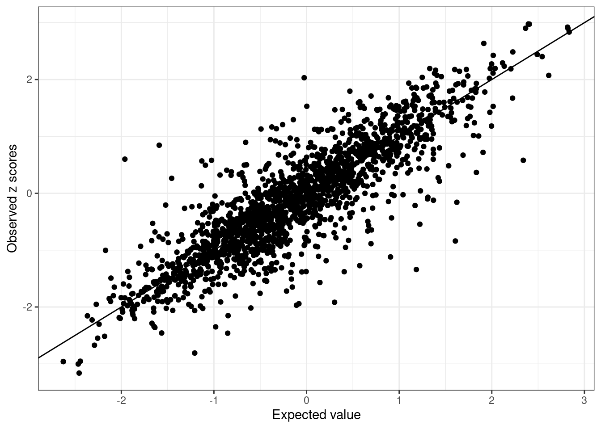

Last updated: 2026-05-20
Checks: 6 1
Knit directory: INFUSE_website/
This reproducible R Markdown analysis was created with workflowr (version 1.7.2). The Checks tab describes the reproducibility checks that were applied when the results were created. The Past versions tab lists the development history.
The R Markdown is untracked by Git. To know which version of the R
Markdown file created these results, you’ll want to first commit it to
the Git repo. If you’re still working on the analysis, you can ignore
this warning. When you’re finished, you can run
wflow_publish to commit the R Markdown file and build the
HTML.
Great job! The global environment was empty. Objects defined in the global environment can affect the analysis in your R Markdown file in unknown ways. For reproduciblity it’s best to always run the code in an empty environment.
The command set.seed(20260410) was run prior to running
the code in the R Markdown file. Setting a seed ensures that any results
that rely on randomness, e.g. subsampling or permutations, are
reproducible.
Great job! Recording the operating system, R version, and package versions is critical for reproducibility.
Nice! There were no cached chunks for this analysis, so you can be confident that you successfully produced the results during this run.
Great job! Using relative paths to the files within your workflowr project makes it easier to run your code on other machines.
Great! You are using Git for version control. Tracking code development and connecting the code version to the results is critical for reproducibility.
The results in this page were generated with repository version f46ac6d. See the Past versions tab to see a history of the changes made to the R Markdown and HTML files.
Note that you need to be careful to ensure that all relevant files for
the analysis have been committed to Git prior to generating the results
(you can use wflow_publish or
wflow_git_commit). workflowr only checks the R Markdown
file, but you know if there are other scripts or data files that it
depends on. Below is the status of the Git repository when the results
were generated:
Ignored files:
Ignored: .claude/
Ignored: analysis/INFUSE.png
Untracked files:
Untracked: MAFPC_method_guangxin_revision_4.docx
Untracked: analysis/Data_prepare.Rmd
Untracked: analysis/Run_INFUSE.Rmd
Untracked: analysis/annotation_integration.Rmd
Untracked: analysis/custom.css
Untracked: analysis/installation.Rmd
Untracked: analysis/real_data_example.Rmd
Untracked: build_site.R
Untracked: code/data_prep_utils.R
Untracked: code/plot_utils.R
Unstaged changes:
Modified: analysis/_site.yml
Note that any generated files, e.g. HTML, png, CSS, etc., are not included in this status report because it is ok for generated content to have uncommitted changes.
There are no past versions. Publish this analysis with
wflow_publish() to start tracking its development.
Note: This guideline details the data preprocessing steps required to standardize GWAS summary statistics and reference LD panels for INFUSE
We provide a streamlined pipeline to prepare input data for INFUSE, using All of Us (AoU) GWAS summary statistics from European Americans and African Americans as examples. The process involves several key stages:
kriging_rss.All helper functions used below are defined in
code/data_prep_utils.R and loaded in the setup chunk.
source(here::here("code/data_prep_utils.R"))Goal: Standardize summary statistics from different ancestries (e.g., EUR and AFR) to a common reference panel (e.g. 1000 Genome).
We recommend removing strand-ambiguous SNPs,
multi-allelic variants, variants within the MHC
region, and variants with minor allele frequency (MAF)
< 0.01 via GWAS_QC. Importantly, similar to the
joint-modeling approach in MESuSiE, we restrict to the
intersection of SNPs between EUR and AFR.
library(tidyverse)
source("/scratch/negishi/chen4422/hapnest/multi-ans-sum-stats/Lipids_all_of_us_v8/formatted/format_summary_stats/utility.R")
ref <- fread("/scratch/negishi/chen4422/UKBB_pheSVD-main/ukb_geno/in_sample_ld/1kg_build38/flipped_finemap_allbyall/1kg_afr_maf_unrelated_biallelic_nodup_extracted.bim")
colnames(ref) <- c("CHR", "SNP", "CM", "POS", "ALT", "REF")
ref <- GWAS_QC(ref, 0.01)
annot <- fread("/scratch/negishi/chen4422/UKBB_pheSVD-main/ukb_geno/in_sample_ld/baselineLF_v2.2.UKB/annot_combine/first_three_columns.annot")
afr_file <- "/scratch/negishi/chen4422/hapnest/multi-ans-sum-stats/Lipids_all_of_us_v8/formatted/DBP_v8_GWAS_afr_regenie_results_From5_20250417_combined_format_noMHC.csv.gz"
eur_file <- "/scratch/negishi/chen4422/hapnest/multi-ans-sum-stats/Lipids_all_of_us_v8/formatted/DBP_v8_GWAS_eur_regenie_results_From5_20250417_combined_format_noMHC.csv.gz"
# QC and filter each ancestry against the 1KG reference
afrdata_qced <- read_sumstats(afr_file, ref)
eurdata_qced <- read_sumstats(eur_file, ref)
# Restrict to common SNPs, align alleles, and filter to annotation SNPs
common_snp <- find_common_snps(eurdata_qced, afrdata_qced)
eurdata_tofinemap <- eurdata_qced %>% filter(CHR_POS %in% common_snp)
eurdata_tofinemap$SNP <- ref$SNP[match(eurdata_tofinemap$CHR_POS, ref$CHR_POS)]
afrdata_tofinemap <- allele_flip(eurdata_tofinemap,
afrdata_qced %>% filter(CHR_POS %in% common_snp))
afrdata_tofinemap$SNP <- ref$SNP[match(afrdata_tofinemap$CHR_POS, ref$CHR_POS)]
eurdata_tofinemap <- eurdata_tofinemap %>% filter(SNP %in% annot$SNP)
afrdata_tofinemap <- afrdata_tofinemap %>% filter(SNP %in% annot$SNP)
# Write outputs
trait <- "DBP"
out_dir <- "/scratch/negishi/chen4422/hapnest/multi-ans-sum-stats/Lipids_all_of_us_v8/formatted/format_summary_stats/summstats_to_finemap/"
fwrite(eurdata_tofinemap,paste0(out_dir, trait, "_EUR_GRCh38_combined_format_noMHC_to_finemap.csv"))
fwrite(afrdata_tofinemap,paste0(out_dir, trait, "_AFR_GRCh38_combined_format_noMHC_to_finemap.csv"))
fwrite(eurdata_tofinemap[, c(1, 6)], paste0(out_dir, trait, "_GRCh38_combined_format_noMHC_to_finemap_ref_flip"), col.names = FALSE, sep = " ")
fwrite(eurdata_tofinemap[, c(1)], paste0(out_dir, trait, "_GRCh38_combined_format_noMHC_to_finemap_snplist"), col.names = FALSE)Note that the ALT and REF alleles need to be consistent across ancestry groups. In the All of Us dataset this is pre-harmonized; for other sources see this document.
Goal: Construct ancestry-matched LD reference genotypes from 1KG that exactly match the GWAS variant list and use the same REF/ALT orientation, avoiding sign errors in Z-scores.
We use plink2 to subset 1KG genotypes
(--extract), enforce REF allele orientation
(--ref-allele), and output a new
.bed/.bim/.fam file (--make-bed).
trait <- "DBP"
align_ld_ref("EUR", trait)
align_ld_ref("AFR", trait)Below, we use the region spanning 58,658,279–59,673,534 bp on
chromosome 20 (DBP) as an illustrative example.
build_ld_matrix() extracts SNPs in the region, runs plink2,
flags monomorphic variants, and writes the LD correlation matrix.
trait <- "DBP"
kg_dir <- paste0("/scratch/negishi/chen4422/UKBB_pheSVD-main/ukb_geno/in_sample_ld/1kg_build38/flipped_finemap_allbyall/lipids_v8/test_MF/")
eur_ref <- fread(paste0(kg_dir, "1kg_eur_maf_unrelated_biallelic_nodup_extracted_", trait, "_flipped.bim"))
afr_ref <- fread(paste0(kg_dir, "1kg_afr_maf_unrelated_biallelic_nodup_extracted_", trait, "_flipped.bim"))
start <- 58658279; end <- 59673534
build_ld_matrix(eur_ref, chr_num = 20, start_pos = start, end_pos = end,
bfile = paste0(kg_dir, "1kg_eur_maf_unrelated_biallelic_nodup_extracted_", trait, "_flipped"),
out_dir = paste0("risk_loci_ld_eur_", trait))
build_ld_matrix(afr_ref, chr_num = 20, start_pos = start, end_pos = end,
bfile = paste0(kg_dir, "1kg_afr_maf_unrelated_biallelic_nodup_extracted_", trait, "_flipped"),
out_dir = paste0("risk_loci_ld_afr_", trait))A common issue in fine-mapping is mismatch between summary statistics
and the LD reference panel. We use kriging_rss from
susieR to iteratively identify and remove SNPs whose
Z-scores are inconsistent with the LD structure.
filter_ld_mismatch() handles the full loop
automatically.
trait <- "DBP"
geno_dir_eur <- paste0("/scratch/negishi/chen4422/hapnest/multi-ans-sum-stats/Lipids_all_of_us_v8/formatted/format_summary_stats/risk_loci_ld_eur_", trait, "/")
geno_dir_afr <- paste0("/scratch/negishi/chen4422/hapnest/multi-ans-sum-stats/Lipids_all_of_us_v8/formatted/format_summary_stats/risk_loci_ld_afr_", trait, "/")
afr_sumstats <- fread(paste0("/scratch/negishi/chen4422/hapnest/multi-ans-sum-stats/Lipids_all_of_us_v8/formatted/format_summary_stats/summstats_to_finemap/", trait, "_AFR_GRCh38_combined_format_noMHC_to_finemap.csv"))
eur_sumstats <- fread(paste0("/scratch/negishi/chen4422/hapnest/multi-ans-sum-stats/Lipids_all_of_us_v8/formatted/format_summary_stats/summstats_to_finemap/", trait, "_EUR_GRCh38_combined_format_noMHC_to_finemap.csv"))
afr_res <- filter_ld_mismatch(geno_dir_afr, "loci_example", afr_sumstats)

The Kriging RSS diagnostic plot color-codes SNPs by their likelihood of being an LD outlier. In the example above, an initial outlier was identified and removed in the following iteration.
We apply the same procedure to the European American group, then save the cleaned outputs:
eur_res <- filter_ld_mismatch(geno_dir_eur, "loci_example", eur_sumstats)
data_dir <- paste0("/scratch/negishi/chen4422/hapnest/multi-ans-sum-stats/Lipids_all_of_us_v8/formatted/format_summary_stats/results_", trait, "/summary_data/")
fwrite(afr_res$sumstats, paste0(data_dir, "afr_loci_example_summ"))
fwrite(eur_res$sumstats, paste0(data_dir, "eur_loci_example_summ"))
fwrite(afr_res$cov, paste0(data_dir, "afr_loci_example.ld"), sep = " ")
fwrite(eur_res$cov, paste0(data_dir, "eur_loci_example.ld"), sep = " ")
sessionInfo()R version 4.2.2 (2022-10-31)
Platform: x86_64-pc-linux-gnu (64-bit)
Running under: Rocky Linux 8.10 (Green Obsidian)
Matrix products: default
BLAS/LAPACK: /apps/spack/negishi/apps/openblas/0.3.21-gcc-12.2.0-lzvicim/lib/libopenblas_zenp-r0.3.21.so
locale:
[1] LC_CTYPE=en_US.UTF-8 LC_NUMERIC=C
[3] LC_TIME=en_US.UTF-8 LC_COLLATE=en_US.UTF-8
[5] LC_MONETARY=en_US.UTF-8 LC_MESSAGES=en_US.UTF-8
[7] LC_PAPER=en_US.UTF-8 LC_NAME=C
[9] LC_ADDRESS=C LC_TELEPHONE=C
[11] LC_MEASUREMENT=en_US.UTF-8 LC_IDENTIFICATION=C
attached base packages:
[1] stats graphics grDevices utils datasets methods base
other attached packages:
[1] dplyr_1.1.4 data.table_1.16.2 workflowr_1.7.2
loaded via a namespace (and not attached):
[1] tidyselect_1.2.1 xfun_0.48 bslib_0.8.0
[4] splines_4.2.2 lattice_0.20-45 colorspace_2.1-1
[7] vctrs_0.6.5 generics_0.1.3 htmltools_0.5.8.1
[10] yaml_2.3.10 utf8_1.2.4 survival_3.4-0
[13] rlang_1.2.0 mixsqp_0.3-54 jquerylib_0.1.4
[16] later_1.3.2 pillar_1.9.0 glue_1.8.0
[19] withr_3.0.2 BiocGenerics_0.44.0 plyr_1.8.9
[22] matrixStats_1.4.1 lifecycle_1.0.5 stringr_1.5.1
[25] zlibbioc_1.44.0 munsell_0.5.1 gtable_0.3.6
[28] evaluate_1.0.5 labeling_0.4.3 knitr_1.48
[31] callr_3.7.6 fastmap_1.2.0 httpuv_1.6.6
[34] ps_1.9.2 irlba_2.3.5.1 fansi_1.0.6
[37] highr_0.11 Rcpp_1.1.1 scales_1.3.0
[40] promises_1.3.0 susieR_0.12.35 cachem_1.1.0
[43] jsonlite_2.0.0 farver_2.1.2 fs_2.0.1
[46] ggplot2_3.5.2 digest_0.6.37 stringi_1.8.4
[49] processx_3.8.7 getPass_0.2-4 rprojroot_2.1.1
[52] grid_4.2.2 here_1.0.1 cli_3.6.3
[55] tools_4.2.2 magrittr_2.0.3 sass_0.4.9
[58] snpStats_1.48.0 tibble_3.2.1 crayon_1.5.3
[61] whisker_0.4 pkgconfig_2.0.3 Matrix_1.6-4
[64] reshape_0.8.9 rmarkdown_2.28 httr_1.4.7
[67] rstudioapi_0.14 R6_2.6.1 git2r_0.36.2
[70] compiler_4.2.2